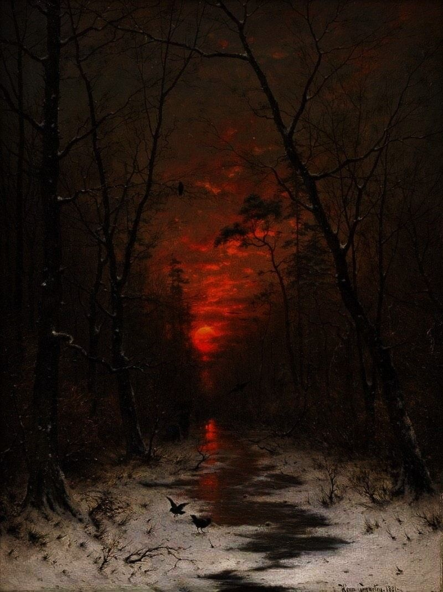
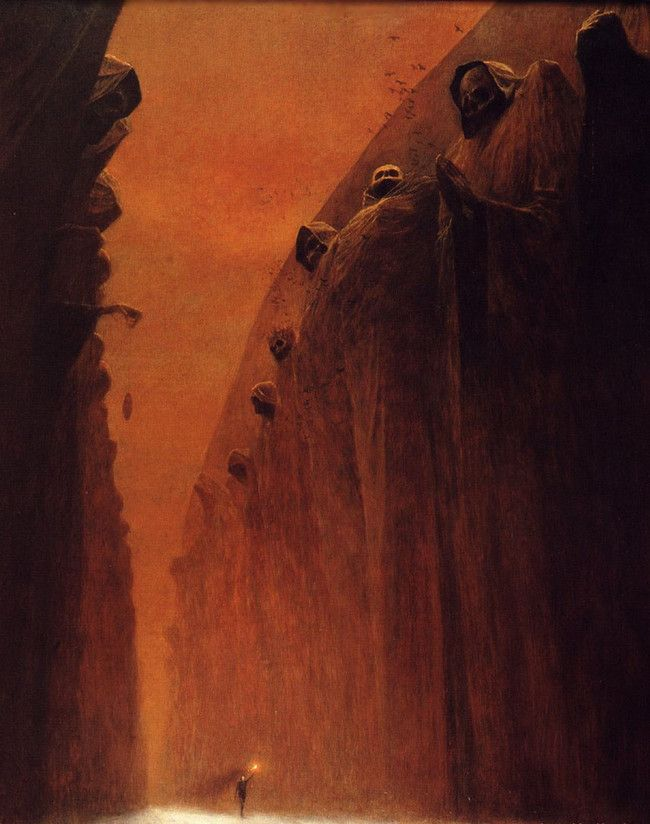
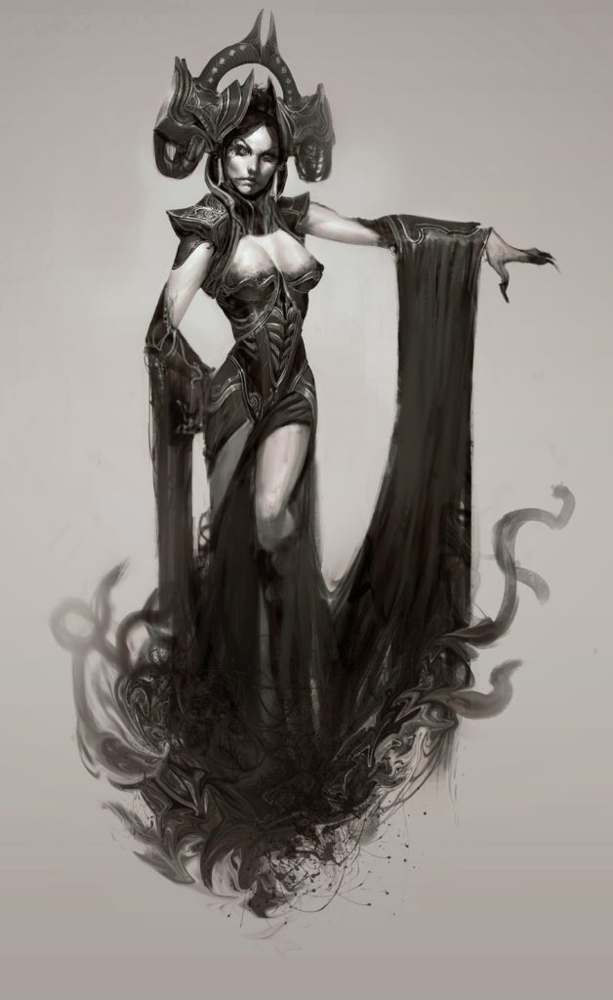

IL TARTARO
CHE COS'È IL TARTARO?
Nella mitologia greca esiste un luogo chiamato Tartaro, questo è un luogo di eterna sofferenza per coloro che hanno fatto il male, questo sarebbe equiparato all'inferno all'interno del Cristianesimo. Egli si trovava nel profondo della terra, in un luogo chiamato Mondo Sotterraneo, questo luogo era amministrato da Ade, il dio più grande degli inferi.
Il mondo sotterraneo è un luogo remoto la cui distanza dalla terra sarebbe la stessa che c'è tra il cielo e la terra. Il Tartaro è composto da un ambiente di tre strati di notte, questo significa che è un luogo estremamente buio oltre ad essere protetto da un muro scuro che protegge un pozzo pieno di oscurità.
È importante ricordare che nel Tartaro era stato rinchiuso il Dio principale della mitologia greca conosciuto come Zeus durante il periodo del Titanomachia, che sarebbe stato quel periodo storico in cui scoppiò la guerra tra i titani.
ADE, DIO DEGLI INFERI
Nella mitologia greca è il dio degli inferi, figlio di Crono e di Rea. Fratello di Zeus e di Poseidone, al momento della spartizione dell'universo in tre parti, divenne il signore dell'oltretomba. Il suo nome significa "l'invisibile". Infatti Ade possedeva un elmo che rendeva invisibile chi lo portava. Generosamente il dio degli inferi prestò il suo magico elmo ad Atena, che non voleva essere vista da Ares, e a Ermes, che grazie all'invisibilità riuscì a uccidere il gigante Ippolito. L'appellativo Plutone, che significa "il ricco", gli venne dato dagli antichi greci perché era considerato di malaugurio pronunciarne il nome. Con tale termine è indicato anche il pianeta più distante del sistema solare. Nella mitologia romana il dio corrispondente è Dis Pater detto anche Dite.

REGNO DEI MORTI
Il tartaro possiede dentro di sé un luogo destinato ai morti e questo è il mondo dei morti, è importante non confondere questo luogo con il Tartaro poiché in quest'ultimo arrivano le persone o gli dei che saranno puniti per le loro azioni mentre nel mondo dei morti, Tutti quelli che sono morti finiscono qui.

PUNIZIONE NEL TARTARO
Nel Tartaro, le punizioni fornite erano in accordo con la cattiva azione commessa, potremmo prendere per esempio Tantalio, questo era un umano che godeva dei pasti e della fiducia degli dei al punto che abusava di questi benefici e li tradì. La punizione di Tantalio era di essere immerso fino al collo in un lago, su di esso si trovava un albero pieno di frutta, ogni volta che provava a mangiare i frutti o bere acqua, questi si sarebbero allontanati da lui.
.jpg)
TARTARO COME UNA DIVINITÀ
Oltre ad essere un luogo situato nel mondo sotterraneo, il Tartaro era una delle prime divinità nella mitologia greca. Pur essendo una delle prime divinità, si hanno poche informazioni su di lui. Il poeta greco Esiodo commenta che Tartaro costituiva il gruppo delle divinità primordiali che sono Caos che è descritto come il primo stato del cosmo, Gea la dea della terra ed Eros il dio della fertilità.
MITOLOGIA ROMANA E IL TARTARO
Come è noto, la mitologia greca e la mitologia romana sono molto simili, infatti, hanno gli stessi dei solo che i loro nomi variano, ma in sostanza è lo stesso. Dobbiamo ricordare che, all'interno della mitologia romana, il Tartaro è il luogo in cui vengono inviati i peccatori. Questo è protetto da un'Idra, un essere mitologico di cinquanta teste che siede alle porte di questo luogo; anche sorvegliato da Tisfirone, che è la rappresentazione della Furia e della Vendetta, che si posa in cima a una torre per poter frustare con una frusta coloro che cercano di fuggire o che non rispettano la loro punizione.

COMPONENTI DEL TARTARO
Questo luogo di punizione era estremamente grande e per questo era necessario che molti esseri fossero in esso sia per sorvegliarlo che per amministrare e imporre le punizioni che qui venivano eseguite, Poi parleremo dei giudici e dei guardiani che erano nel Tartaro.
GIUDICI
C'era un tribunale incaricato di emettere le sentenze a coloro che arrivavano nel Tartaro, tale tribunale era composto da Radamanti, Ecaco e Minosse, dobbiamo anche includere Ade poiché molte volte c'era bisogno di questo dio per imporre una giusta punizione. Ora Radamanti, Ecaco e Minosse erano i giudici dei morti, mentre Radamanti giudicava le anime dell'Asia, Eaco quelle dell'Europa e Minosse era colui che aveva il voto decisivo in ogni giudizio.
GUARDIANI
Poiché il Tartaro era il luogo dei dannati, molti di loro volevano sfuggire alla loro imminente punizione, ma per evitare questo, c'erano giganti che possedevano decine di grandi teste e centinaia di braccia, questi esseri erano conosciuti come Ecatombi.
Questi esseri sono figli della dea della terra Gea e di Urano, il dio del cielo. Si narra che Urano li avrebbe mandati nel Tartaro considerandoli fenomeni, ma poi furono salvati da Crono perché lo aiutassero a rovesciare Urano. Dopo aver aiutato Crono, questi li tradì e li rinchiuse di nuovo nel Tartaro.
Poi, durante la guerra dei Titani, fu Zeus a chiedere l'aiuto degli Ecattandri per lanciare pietre contro i titani. Una volta finita la guerra, Zeus lasciò che questi scegliessero quello che volevano fare e decisero di essere i guardiani delle porte del Tartaro.